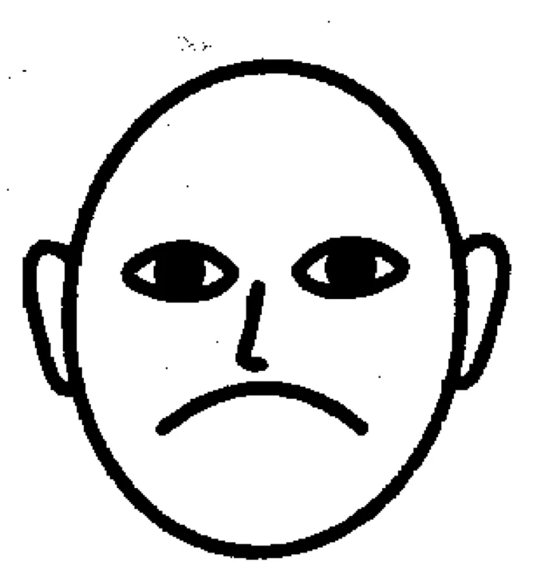
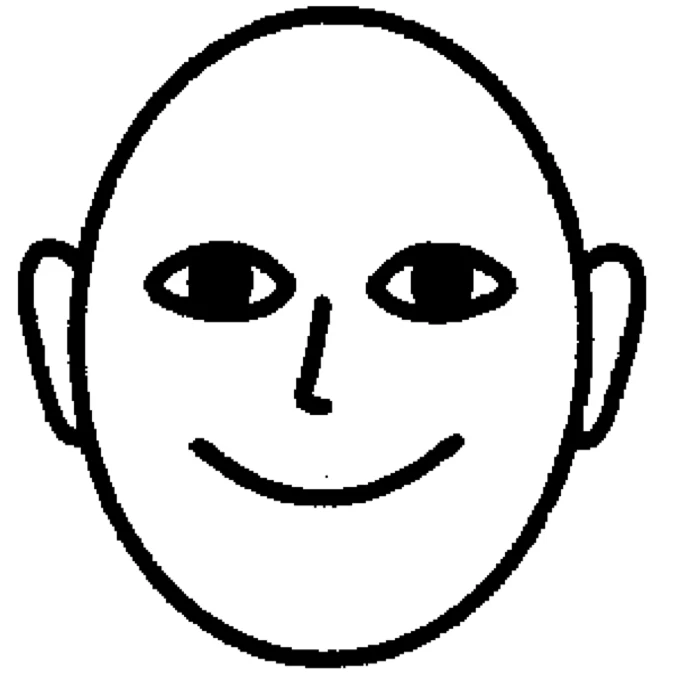

Depression
Wenn die Seele weint
ALLGEMEIN: Wenn Du deprimiert bist, lebst Du in der Vergangenheit. Wenn Du besorgt bist, lebst Du in der Zukunft. Wenn Du in Frieden bist, lebst du in der Gegenwart. (Laotse, chinesischer Philosoph). Depressionen hat man, aber man spricht nicht darüber. Vor allem, wenn man ein Mann ist. Depressionen sind Gemütsverstimmungen, die in allen Lebensphasen auftreten können. Man könnte sie auch als seelischen Schmerz bezeichnen. Laut einer Studie der Weltgesundheitsorganisation (WHO) leiden heute in Deutschland 10 x mehr Menschen an Depressionen als vor 50 Jahren. Jeder 5. Erwachsene durchlebt sie mindestens einmal im Leben. Was den einen auf die Palme bringt, kann einen anderen völlig kaltlassen.
URSACHEN: Eugen Roth drückte es anschaulich auf seine Weise aus: Zwei Dinge trüben sich beim Kranken: 1. der Urin und 2. die Gedanken. Wenn der Mensch in Stress gerät, wird im Gehirn die Herstellung des „Glückshormons“ Serotonin blockiert. Bei chronischem Stress kann es vorkommen, dass der Serotonin-Spiegel dauerhaft im Minus bleibt und Depressionen und Angsterkrankungen provoziert werden. Die elementare Aufgabe von Vitamin D, in Zusammenhang mit Depressionen und Angststörungen, ist die Produktion von Dopamin und Serotonin. Der Serotonin-Wert beeinflusst die Gemütslage entscheidend. Dauerstress: Es kann hier zu Kopf-, Magen- oder Rückenschmerzen kommen, zu Tinnitus oder einem Hörsturz, zu Schwindelgefühlen, Nervosität, Reizbarkeit und Frustrationsgefühlen. Weitere Folgen können sein: Herzrhythmusstörungen ohne erkennbare Ursache, chronische Schlafstörungen (weniger als 5 Stunden) sowie Gedächtnisprobleme. Stress kann schließlich sogar die Blutgefäße verändern. Nieren, Leber, Galle. Darmpilz (Candida albicans), bringt das Hormonsystem aus dem Gleichgewicht - siehe Pilz, Schilddrüsenunterfunktion. Blut (meist niedriger Magnesium-, Kalium- und Eisenspiegel) untersuchen lassen. Für guten Stuhlgang sorgen. Verstopfung verursacht Depression, Depression verursacht Verstopfung (Teufelskreis). Hohe Homocysteinwerte. Chronisch stille Entzündungen, niedrige Vitamin B6, B12 und D3-Werte. Speziell bei Frauen ist Diabetes ein Risikofaktor für Depressionen. Junge Frauen mit niedrigen Cholesterinwerten neigen zu Ängsten/Depressionen. Die Neigung wird nicht nur weitervererbt, sondern kann sich über die Jahre hinweg auch noch verstärken. Zu diesem Ergebnis kommen US-Studien. Demnach ist das Risiko bei Kindern, deren Eltern und Großeltern unter psychischen Störungen leiden, mehr als doppelt so hoch wie bei Kindern ohne Vorbelastung. Nebenwirkung von Statinen (Cholesterinsenker). Häufiger als gedacht, sind auch Infektionen für die Entstehung von Depressionen und Ängsten verantwortlich. Wirbelsäule (Seelenachse) einrichten lassen - Dorn- und APM-Therapeuten aufsuchen. Übergewicht: Bauchfett fördert Entzündung. Antientzündliche Ernährung, denn was wir essen, hat einen wesentlichen Einfluss auf unsere Stimmung. Die Botschaft geht vom Darm aufs Gehirn. Einsamkeit: Der Mensch ist ein soziales Wesen. Deswegen benötigt er – ebenso wie eine gesunde Ernährung oder Bewegung – Geborgenheit, Liebe, Anerkennung. Einsamkeit ist eine Tür, die nur von innen zu öffnen ist. Die schlimmste Armut ist Einsamkeit und das Gefühl, unbeachtet und unerwünscht zu sein. (Heilige Mutter Teresa). Der Mensch kann auf Sehen und Hören verzichten, aber ohne Berührungen überlebt er nicht, sagt Prof. Martin Grunwald, Tastsinn-Experte, Uni Leipzig. Seine Faustregel lautet: 10x täglich umarmen. Dadurch wird:
- Die Immunabwehr aktiviert,
- die Atmung flacher,
- die Herzfrequenz langsamer und
- die Muskulatur entspannter.
Effekte, die nur bei Berührungsreizen auftreten. Aus diesem Grund müßte es BerührungenaufRezept geben, so Prof. Grunwald. Liebe: Aus medizinischer Sicht ist Liebe ein lang unterschätzter Gesundheitsfaktor. Viele Studien belegen, dass positive Gefühle, wie Liebe, Fürsorge, Mitgefühl oder Dankbarkeit eine sehr positive Wirkung auf Körper und Geist haben. Auch lobende Worte/Kompliment tragen dazu bei, die Beziehung in der Freundschaft oder der Liebe zu verbessern. Es werden Glückshormone ausgeschüttet wie z.B. Oxytocin. Es entsteht durch Berührung, Streicheln, liebevolle Zuwendung und Augenkontakt.
SYMPTOME: Von Depression ist dann die Rede, wenn Symptome wie Antriebs-, Freud- und Lustlosigkeit über mindestens zwei Wochen anhalten. Geschlechter zeigen unterschiedliche Symptome. Frauen werden antriebslos und verfallen in eine trübe Stimmung. Männer dagegen reagieren oft aggressiv, schinden sich noch mehr, treiben wie verrückt Sport und trinken häufiger Alkohol. Verminderte Konzentration, Aufmerksamkeit, Unentschlossenheit, Selbstwertgefühl und Selbstvertrauen, Kloßgefühl im Hals. Schuldgefühle, Gefühl von Wertlosigkeit (sogar bei leichten depressiven Episoden), negative und pessimistische Zukunftsperspektiven. Schlafstörungen, verminderter Appetit- und Gewichtsverlust, selten erhöhter Appetit und Gewichtszunahme (Winterdepression). Selbstverletzung oder Suizid-Gedanken/Handlungen. Gedrückte Stimmung, keine Freude an täglichen Aktivitäten. Quälende Unruhe und Neigung zum sozialen Rückzug. Fehlende Energie, ständige Müdigkeit, Schlafstörungen, geringes sexuelles Interesse. Bei Menschen, die an Depressionen leiden, ändert sich auch die Art zu sprechen. Sie reden mit monotoner und leiser Stimme. Bei diesen Symptomen sollten Sie sich frühzeitig an einen Psychiater oder Neurologen wenden.
ERNÄHRUNG: Fasten: Wer fastet, fühlt sich schon nach 2-3 Tagen durch die vermehrte Produktion von Serotonin (Glückshormon) wohler, Arzt befragen. Wer sich wohl fühlt, lebt gesünder und wer gesünder lebt, fühlt sich wohler. Mit Essen den Trübsinn vertreiben. Viel Rohkost. Iss roh, so wirst Du froh. Cashewkerne. Kaum ein anderes Lebensmittel enthält soviel Tryptophan wie Cashews. Unser Körper benötigt diese Aminosäure, um das Glückshormon Serotonin zu produzieren. Haferflocken, Petersilie, Weizenkeime/Sprossen, Soja, Artischocken, Walnüsse (ein hoher Vitamin D-Spiegel gilt als guter Schutz). Viel Fisch/Omega-3-Fettsäuren (siehe Öle/Fette) sind gut für die Psyche. Bei den Eskimos treten Depressionen nur sehr selten auf, obwohl sie wenig Sonnenlicht abbekommen. Butter, Tomaten und Kohlenhydrate (Serotonin). Viel frisches Obst, grünes Blattgemüse hellt die Stimmung deutlich auf. Zur Blutreinigung Kresse, Senfkörner, Endiviensalat und Dinkel essen. Mit Pfeffer würzen, bringt Pfeffer ins Leben. Essen Sie Phytoöstrogene (siehe Frauen). Sie machen Sie glücklich und beseitigen Depressionen und Wechseljahresbeschwerden. Bananen, Datteln und ab und zu 1 Stück Schokolade (> 70 % Kakaoanteil) essen (Seelentröster). Ihr Inhaltsstoff Serotonin hebt die Stimmung.
MEIDEN:Bohnenkaffee, er kann Depressionen und Unruhe verursachen. Tierisches Eiweiß (Fleisch/Wurst, Eier, Milch), Weizen, Weißmehlprodukte (Gluten-Unverträglichkeit). Eventuell liegt auch eine Nahrungsmittelallergie vor (Mais, Zucker, etc.). Cola, Matetee (enthält Tannin, erschwert die Aufnahme von Psychopharmaka). Beim Einkauf auf Konservierungsstoffe (Aspartam, E951 - Light-Produkte) achten. Omega-6-FS (siehe Öle/Fette).
GETRÄNKE: Wasser ist oft die beste Naturmedizin bei depressiver Verstimmung. Man trinkt im Verlauf von 3 Stunden bis zu 2 Liter Wasser. Vorsicht: Nicht bei Herz- und Nierenleiden (Arzt befragen). Eventuell Heißwasser-Trinkkur durchführen. Wenn Ihr Blut von Schlackenstoffen befreit ist, werden auch Ihre Gedanken wieder klarer. Johanniskraut (nicht abends trinken, wirkt anregend), Löwenzahn, Melisse, Kamille, Baldrian, Weißdorn, Wermut (heilt Schwermut) und Schlüsselblumen: Sie lösen innere Verkrampfungen und öffnen den Weg zu mehr Kontaktfreudigkeit. Gelöschter Wein: 1 Glas Wein (z.B. Bopparder Hamm) aufkochen, mit ½ Glas kaltem Wasser ablöschen und warm trinken (Hildegard-Medizin). Bier: Die im Gerstenmalz enthaltene Substanz Hordenin aktiviert das Belohnungszentrum im Gehirn und sorgt für ein Hochgefühl (Uni Erlangen-Nürnberg).
THERAPIE: Körper entsäuern. Säure wirkt stets anregend bzw. nervenreizend. Übersäuerte Menschen sind oft Stimmungsschwankungen ausgesetzt und erweisen sich als seelisch gering belastbar. Nach einer Entsäuerung tritt oft schon nach einigen Tagen eine Harmonisierung ein. Gesunde, fröhliche Babys haben einen neutralen pH-Wert von ca. 7. Darm sanieren. Amalgam entfernen/ausleiten lassen. Alle Patienten mit neurologischen Störungen haben Quecksilber im Blut. Borrelien (Zecken) sowie den Schlafplatz auf Erdstrahlen untersuchen lassen. Elektrostress meiden, Netzfreischalter einbauen lassen. Auch Zinkmangel kann schwere Depressionen auslösen. Nebenwirkung von Medikamenten. Eine gedrückte Haltung löst unweigerlich auch eine depressive Stimmung/Gedanken aus. Sie macht unsicher und belastet außerdem den Organismus. Das Herz hat weniger Platz im Brustkorb, so

dass seine Arbeit erschwert wird. Die Lunge ist ebenfalls zusammengedrückt. Als Folge bleibt zu viel verbrauchte Luft im Körper. Der Organismus wird immer mehr übersäuert. Positive Gedanken sind fähig, unser Immunsystem zu stärken, während negative Einflüsse es empfindlich schwächen. Ewig Düstre steigt herunter, Sonne geht nicht auf noch unter, bei vollkommen äußeren Sinnen, wohnen Finsternis drinnen. So lässt Goethe seinen Faust klagen. Wenn wir unsere Schulterspitzen nach vorne fallen lassen, werden unsere Gedanken immer trüber/depressiver.
Das Gesicht verrät die Stimmung des Herzens. (Dante Alighieri) Wende Dein Gesicht der Sonne zu, dann fallen die Schatten hinter Dich.(aus Afrika)
Machen Sie jetzt die Gegenprobe: Schließen Sie Ihre Augen und werfen Sie Ihre Schultern nach

hinten, richten Sie sich auf. Ihre Stimmung, Gedanken werden bald fröhlicher. Kopf hoch - Brust raus.
Schauen Sie z.B.:
nach oben/Himmel (positiv)
nach unten/Boden (negativ)
Diese Haltungskorrektur - in Verbindung mit einer optimistischen Denkweise - ist eine einfache Methode für die Besserung der Depression und der Unsicherheit.
- Versuchen Sie sich einmal für die Sorgen eines anderen Menschen zu interessieren. Sie werden nicht nur ihm eine Freude machen. Sie werden sich auch selbst von der eigenen trüben Stimmung befreien. Wichtig ist es, aus den eigenen vier Wänden herauszukommen und Freundschaften zu pflegen.
- Lass nicht zu, dass Dir jemand begegnet, der nach der Begegnung mit Dir nicht glücklicher ist. (Heilige Mutter Teresa).
- In welcher Situation wir uns auch befinden, es ist immer möglich, etwas Positives zu finden. (Dalai Lama).
- Singen Sie viel: Man kann nicht singen und gleichzeitig weinen.
- Lachen Sie viel: Wer lacht, denkt weniger negativ, über sich selbst lachen.
- Loslassen, was einem nicht gut tut.
- Menschen suchen, in deren Gesellschaft man sich wohl fühlt und sich von Menschen trennen, die einem nicht sympathisch sind.
- Nicht grübeln, nicht zu weit in die Zukunft blicken.
- Bewegen, Bewegen …Trägheit macht traurig. (Thomas von Aquin). Je weniger man körperlich aktiv ist, desto leichter wird man depressiv.
- Früh aufstehen und sich dem Tageslicht aussetzen.
- Täglich 1 Stunde lang flott marschieren, dabei immer gut ausatmen. Sport ist gut gegen Depressionen und besser als Antidepressiva (US-Wissenschaftler/Abteilung Sport).
- Als hilfreich hat sich auch die sogenannte Wachtherapie erwiesen: Die Patienten werden in der Nacht nach mehreren Stunden Schlaf geweckt und bis zum nächsten Abend wach gehalten.
- Kalte Armbäder haben eine euphorisierende Wirkung (Pfarrer Kneipp).
- Auf eine Psychotherapie, das zeigen Studien, sprechen bis zu 60 % der Patienten mit leichten bis mittelschweren Depressionen gut an. Der Erfolg hängt dabei von der langjährigen Erfahrung des Therapeuten ab.
- Gläubige Menschen (siehe Gebete) werden viel seltener depressiv als Menschen, die mit Religion nichts anfangen können (Columbia Uni). Die Seele lebt auf, wenn der Mensch seinen Lebenssinn wiedererlangt hat. Vergessen Sie nicht, dass jede schwarze Wolke eine dem Himmel zugewandte Sonnenseite hat. (F.W. Weber)
Sonstiges:Liebesglück schützt: Umarmen Sie jemand. Wenn Sie nur 20 Sekunden Ihre Liebste drücken, schüttet der Körper das Antistresshormon Oxytocin aus. Es stärkt die körpereigenen Abwehrkräfte, lindert Schmerzen, verbessert die Wundheilung und schützt vor Depressionen. Wer viel verreist, hat weniger Depressionen (US-Studie). Weitere Infos: Richtige Ernährung für Geist und Seele.
MEDIKAMENTE: Neurapas® balance Filmtabletten, Helarium® 425 Kapseln (Johanniskraut). Achtung: Johanniskraut hat starke Wechselwirkung mit anderen Medikamenten (Pille), Therapeut befragen. Vitamin B-Komplex forte /Hevert Tabletten und D3-Präparate, Zinktabletten. Homöopathisch: Spenglersan® Kolloid K (3 x täglich 5-10 Sprühstöße hinter dem Ohr/Warzenfortsatz des Schläfenbeins einreiben). Magnesium phosphoricum D6 (entspannend) 3 x täglich 2 Tabletten lutschen. Schüßler Salz Nr. 5 Kalium phosphoricum D6. Wichtige Bachblüten: Aspen, Gentian, Mustard, Sweet Chestnut/Heilpraktiker befragen. Cordyceps/Reishi Heilpilzkapseln (Beratung/Bezug).